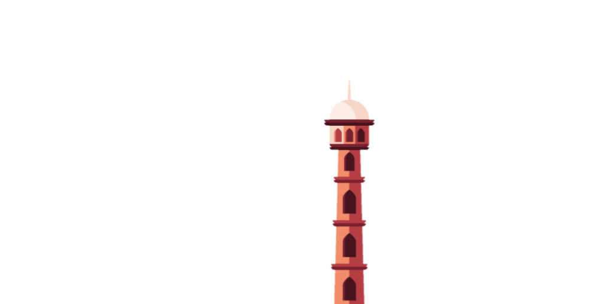
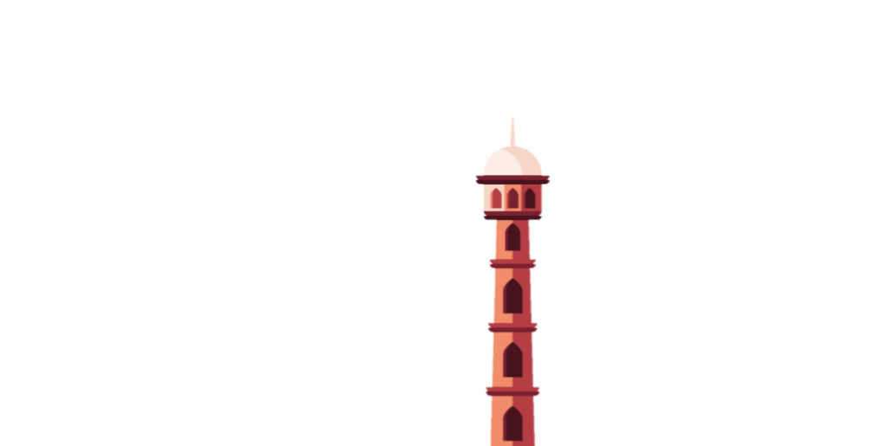
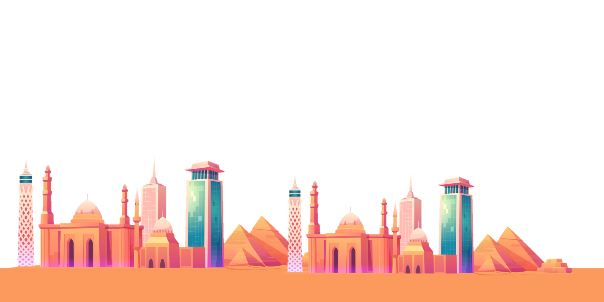
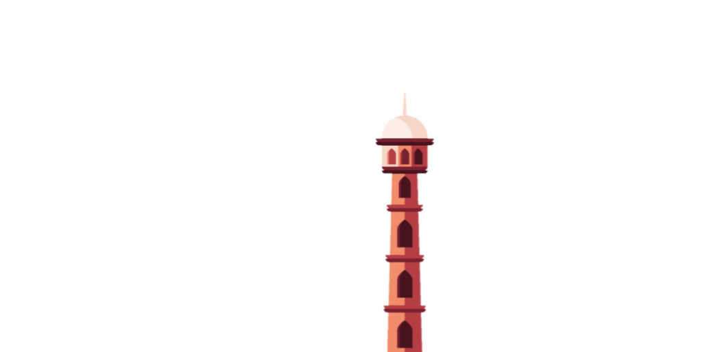
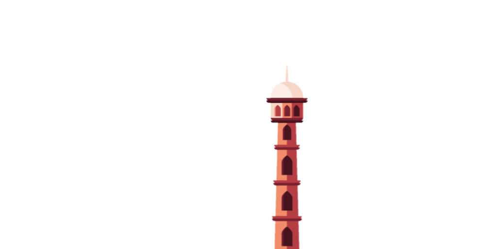

Makna Ramadhan

 

Makna bulan Ramadhan bagi umat Islam yang pertama adalah bulan yang penuh dengan kesabaran. Saat bulan Ramadhan, umat Muslim diwajibkan berpuasa selama sebulan penuh.
Selama berpuasa, umat islam diwajibkan untuk menahan segala hawa nafsu, berperilaku sabar, dan tahan akan adanya ujian. Selain itu, umat Muslim diwajibkan untuk menjaga mulutnya dari hal-hal yang tidak baik.
Rasulullah saw. bersabda, "Puasa (Ramadhan) merupakan perisai dan benteng yang kukuh dari siksa api neraka". (HR. Ahmad dan al-Baihaqi).
Perlu diketahui, berpuasa di bulan Ramadhan termasuk satu di antara rukun Islam. Maka itu, makna bula Ramadhan bagi umat Islam sangat besar.
Ramadhan penuh dengan berbagai macam kebaikan serta keberkahan. Maka itu, sebaiknya memperbanyak ibadah dan tadarus di bulan Ramadhan.
Al-Qur'an pertama kali diturunkan kepada Nabi Muhammad saw. di bulan Ramadhan, tepatnya pada 17 Ramadhan. Al-Qur'an merupakan petunjuk dan pedoman hidup yang harus diimani oleh setiap Muslim.
Malam kali pertama diturunkan Al-Qur'an kepada Nabi Muhammad saw. disebut juga dengan Nuzulul Qur'an.
Jadi, makna bulan Ramadhan bagi umat Islam menjadi bertambah penting dengan diturunkannya Al-Qur'an sebagai kitab pedoman kehidupan umat di bulan Ramadhan ini.
Pada bulan Ramadhan terdapat suatu malam yang lebih baik daripada seribu bulan, yaitu malam Lailatul Qadar. Malam Lailatul Qadar ini menjadi suatu malam yang paling diinginkan semua umat Muslim.
Untuk mendapatkan malam ini, seorang Muslim harus melaksanakan ibadah dan amalan yang saleh, seperti berpuasa, tilawah, tadarus Al-Qur'an, berdoa, berzikir, muhasabah diri dan amal ma'ruf lainnya.
Hanya orang-orang yang beramal saleh yang bisa mendapatkan malam ini. Maka itu, makna bulan Ramadhan bagi umat Islam satu di antaranya adalah adanya malam Lailatul Qadar yang merupakan malam yang sangat spesial.
Pada bulan Ramadhan ini, Nabi Muhammad saw. memberi keteladan terbaik dengan banyak bersedekah dan menjadi orang yang paling dermawan.
Hal ini membuat Anda mendapatkan bahwa makna bulan Ramadhan adalah untuk banyak bersedekah dan memberi kepada orang yang tidak mampu serta mengurangi beban fakir dan miskin.
Umat Islam dianjurkan untuk bersedEkah serta di akhir puasa, yaitu sebelum hari raya Idulfitri diwajibkan untuk menunaikan zakat fitrah bagi orang yang mampu.
Makna Ramadhan bagi umat Islam selanjutnya adalah sebagai bulan pengampunan dosa. Rasulullah saw. bersabda:
"Barang siapa yang berpuasa Ramadhan karena keimanan dan hanya mengharap pahala, dosa-dosanya yang telah lalu akan diampuni." - (HR. al-Bukhari)
Melalui hadis tersebut maka telah jelas, Ramadhan memang bulan penuh dengan pengampunan. Allah Swt. menjanjikan pengampunan segala dosa dan kebebasan dari siksa api neraka terhadap orang-orang yang berpuasa karena keimanannya dan semata mata untuk mengharap rida-Nya.
Apalagi ketika bulan Ramadhan, pintu-pintu surga dibuka, pintu-pintu neraka ditutup, dan setan-setan dibelenggu. Sebagaimana Nabi Muhammad saw. bersabda:
"Jika datang bulan Ramadhan pintu-pintu syurga dibuka, pintu-pintu neraka ditutup dan setan-setan dibelenggu." (HR. Al-Bukhari dan Muslim)
Bahkan Allah Swt. menyediakan pintu khusus di surga untuk umat Islam yang berpuasa Ramadhan, yang bernama Ar-Rayyan. Sebagaimana Nabi Muhammad saw. bersabda:
"Pintu Ar-Rayyan hanya diperuntukkan bagi orang-orang berpuasa, bukan untuk selain mereka. Bila pintu tersebut sudah dimasuki oleh seluruh rombongan ahli puasa Ramadan maka tak ada lagi yang boleh masuk ke dalamnya." (HR. al-Bukhari, Muslim dan Ahmad)